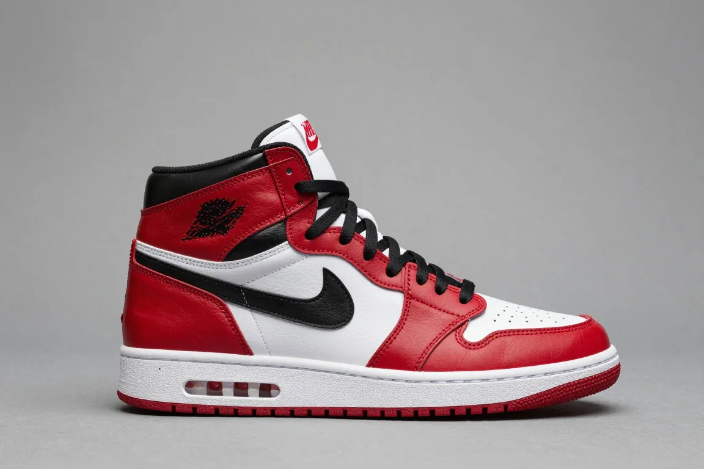

Sneakeren som et merke. Det er en høy skinnsko i lagfarger med et dristig merke, en luftpolstret såle og en begrenset utgivelse. Spillere, rappere og samlere bærer den.

Kjerneidé
I denne stilen er skoen et signal: farge, utgivelse og historie teller mer enn funksjon, og en eier viser smak gjennom det som er sjeldent.
Designprinsipper
Skjær overdelen i skinnpaneler i 3 eller flere farger, i et blokkmønster.
Vis ett stort merke på siden, tungen eller hælen.
Hev sålen til 3 til 4 cm, med en synlig demperenhet i hælen.
Bruk en høy skaft til ankelen på en basketsko, eller en lav sko til hverdag.
Slipp en fargekombinasjon i en begrenset serie, og gi hver fargekombinasjon et navn.
Hold den hvite mellomsålen ren, og snør skoen med vilje, løst eller stramt.
Samle paret i esken, og bruk det med en matchende drakt eller joggedress.